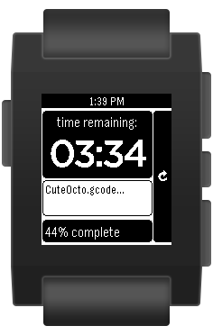
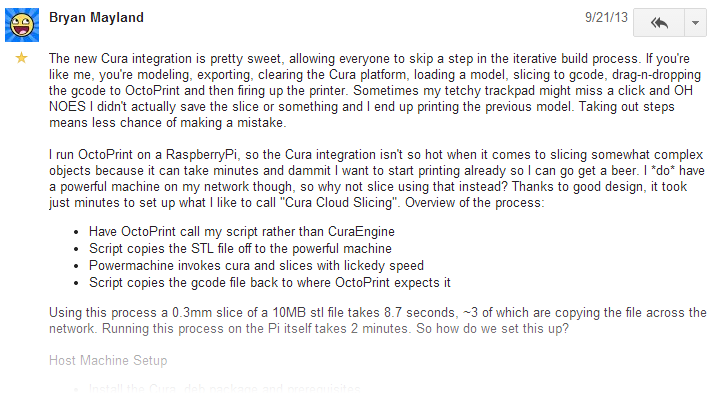
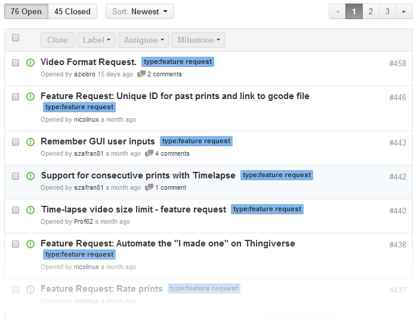

OctoPrint
3D printing unchained

Created by Gina Häußge / @foosel
Who am I?
- Software engineer by day
- Passionate code monkey by night
- Proud owner of a 3D printer since late November 2012 (and a second one since February 2014)
- Developer of OctoPrint since Christmas 2012 (that's what holidays are for, right?)
Why another host software?
The Problem
- PLA/ABS/yourFavoritePolymer fumes
- Stepper motors can produce quite the racket
- Takes up a lot of space in the office (printer, filament, cable salad, ...)
- Takes up the office computer (or the laptop)
The Solution
Just put the printer somewhere it doesn't disturb anyone, like the shed, the basement or a spare bathroom.
But actually watching it print is so mesmerizing and calming, and I also want to make sure nothing goes wrong!
And thus the idea of OctoPrint was born!

What was the vision?
Run on a Wifi-enabled Raspberry Pi
So I can just put it somewhere within my Wifi's range and be able to access it without spending too much money on this convenience.

Provide feedback regarding the current printer state (temperature, print job, etc)
So I can always be sure that it's doing what it's supposed to be doing.
Include a webcam feed
So I can still watch the printer do its magic.
And do all that in the browser!
So that I can quickly check up on it from any of my devices without the need to install anything.
What's in the package?
- Uploading and managing GCODE files on the host or the SD card
- Printing GCODE files stored on the host or the SD, pausing and cancelling running print jobs
- Monitoring the current progress, temperature and printer communication and visualizing the object being printed
- Watching the print via the integrated webcam feed and creating timelapse movies of the prints
- Remote controlling the printer functions
- Customizing the available controls
- Getting notifications and triggering actions based on certain events, like a print being done
- Access control and user management so that you can make your printer accessible over the internet (also great for shared printers e.g. in hackerspaces)
- Slicing support via Cura Engine
All this in a reactive web interface using modern web technologies that ensure an experience just like on the desktop.

Demo time!

Showcases from the Community
Octowatch for Pebble
Source: github.com/jjg/octowatch
(big kudos to +Jason Gullickson)
Google Glass integration

(big kudos to +Adam Bryam)
Remote Slicing
Use a powerful machine for slicing from your Pi, all fully automated (Mailinglist post)
(big kudos to +Bryan Mayland)
OctoPi Monitor & Simple Octo Display

(big kudos to +Christian Hoj & +Mauro Manco)
UI concept "KRAKEN"

(big kudos to +Gijs van Roij)
What's to come?
- Multi-extruder support (already available in the development version!)
- A powerful RESTful API to allow custom clients (e.g. native apps) to use OctoPrint as their backend (WIP but already available in the development version!)
- A modular communication backend that will allow adapting to future printer specifics
- An interface optimized for mobile devices
- Better Slicing support (more slicers, cloud, more flexibility and usability)
- Plugin system for adding more specialized functionality to the core application
... and there are so many more requests and ideas!
Patches and moderation help very welcome! :)
Want to try it?
With OctoPi there's a dedicated distribution for the Raspberry Pi, created by +Guy Sheffer:
Or you can always install from source:
Some 3D printers even ship with OctoPrint already on board!
- PrintrBot GO v2
- Type A Machines 2014 Series 1
Questions?
Website:
octoprint.org
Github (Source, Bugtracker, Wiki):
github.com/foosel/OctoPrint
Backup
What you can do with events...
Automatically upload timelapses to Youtube
events:
systemCommandTrigger:
- event: MovieDone
command: 'youtube-upload --email="<yourUser>"
--password="<yourPassword>"
--title="Timelapse: %(filename)s"
--description="Timelapse of %(filename)s, printed and recorded
via OctoPrint"
--category="Tech"
--keywords=OctoPrint "%(data)s"'
(Using youtube-upload)
Push notifications for Android and iOS
events:
systemCommandTrigger:
- event: PrintDone
command: curl -s
-F "token=<yourApiToken>"
-F "user=<yourUserToken>"
-F "message=Completed %(filename)s"
-F "title=OctoPrint"
https://api.pushover.net/1/messages.json
(Using Pushover)
Send an email with snapshot of the printed object
events:
systemCommandTrigger:
- event: PrintDone
command: curl -o /tmp/printDone.jpg
"http://localhost:8080/?action=snapshot" &&
mpack -s "Print of %(filename)s finished"
/tmp/printDone.jpg <your mail address>(Using ssmtp, mailutils and mpack, see the Wiki for details)
Under the hood
- Written in Python (2.7) and loads of Javascript
- Tornado, Flask, PySerial, PyYAML, ...
- jQuery, Knockout.js, Flot, Moment.js, Underscore.js, ...
- Communication to the backend via AJAX and Sock.js